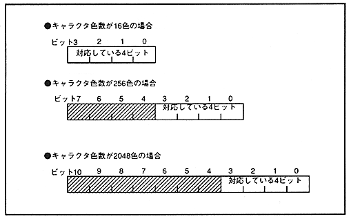

Special functions are performed on each scroll screen. There are two special functions: special priority function and special color calculation function. When these are used for each dot, the dot color code that enables the special function can be specified in two special function code registers, and each scroll screen has two special function code registers. You can also specify whether to use.
The special function code register has two 8-bit registers each of special function code A and special function code B. Each bit corresponds to two values of the lower 4 bits of the dot color code that uses the special function. It is. The number of bits of the dot color code varies depending on the number of character colors on each scroll screen, but each bit of the special function code register always corresponds to the lower 4 bits of the dot color code. Use the special function code only when the color format of the scroll screen is the palette format.
Please refer to “ 11.2 Special priority function ” and “ 12.2 Special color calculation function ” for how to use special functions.
The dot color code corresponding to the special function code is shown in Figure 10.7.
Figure 10.7 Dot color code corresponding to special function code
